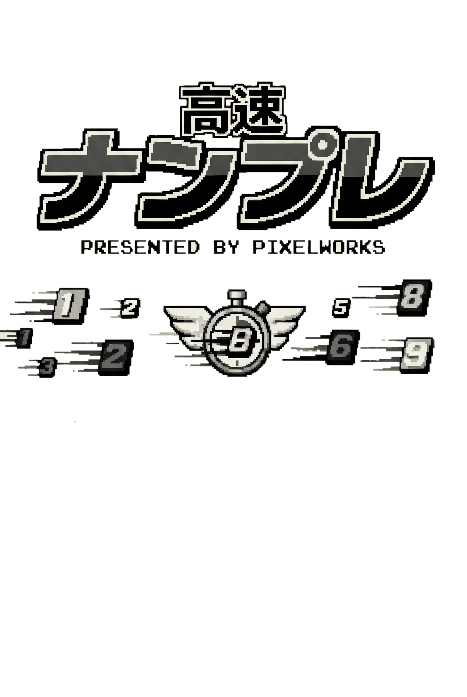

- PRESS START -
EASY
初級
NORMAL
中級
HARD
上級
MASTER
超級
‹ GAME SELECT
LOAD SAVE DATA
中級
⏱ 00:00
SCORE: 0
MISS: 0
0 COMBO
MEMO
1
2
3
4
5
6
7
8
9
HINT
INPUT
1
0/9
2
0/9
3
0/9
4
0/9
5
0/9
6
0/9
7
0/9
8
0/9
9
0/9
SETTINGS
プレイモード
ブラインド
ノーマル
この問題を保存する
最初から解き直す
メニューに戻る
閉じる
SAVE DATA
閉じる